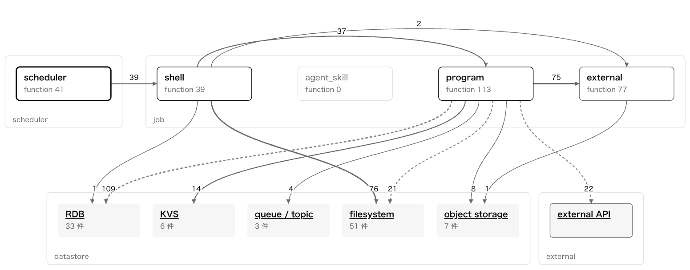
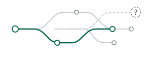
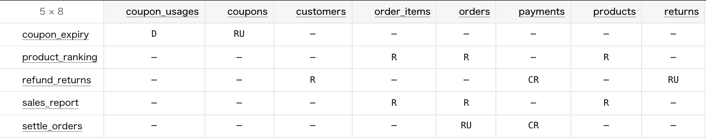
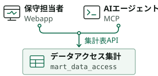

全体図から、売上確定の入口へ
34件の入口のうち、今回の調査対象は /daily/sales/settle_orders。スケジューラから起動する日次バッチです。

Open Source / MIT License
既存コードから、根拠付きの「実装の地図」を作るOSSです。Web画面、API、ジョブなどの入口から処理とデータをたどり、改修の影響を調べられます。
3D図をタップすると、回転を停止・再開できます。


呼び出しを追いきれない関数を一つずつ開いても、変更がどの入口に響くのか見通しづらい。
 設計書と実装がずれている
設計書と実装がずれている今もその通りに動くのか、結局ソースコードを調べ直している。
どの行を根拠にしたのか、どこまで調べたのかが分からない。
架空の「ことり書店」で、前日の注文を売上確定するバッチを調べます。コードと分析データは同じ仕様から生成したものです。全体図から注文テーブルをたどり、更新の根拠を確かめます。
34件の入口のうち、今回の調査対象は /daily/sales/settle_orders。スケジューラから起動する日次バッチです。

フローから scripts/run_job.sh を経て jobs/settle_orders.py が動きます。注文テーブルに対して読み取りと更新の両方があります。

orders 列を縦にたどると、売上確定（settle_orders）だけが読み取り・更新（RU）。売上レポートと商品ランキングは読み取り（R）です。注文状態の変更を調べるときは、この2つの集計も確認候補になります。
対象は /daily/sales の5入口と、shop スキーマの8テーブルです。この画面幅では orders を使う3入口を表示しています。画像を開くと全8列を確認できます。

| 入口 | テーブル | 操作 |
|---|---|---|
| coupon_expiry | coupon_usages | D（削除） |
| coupons | RU（読取・更新） | |
| product_ranking | order_items | R（読取） |
| orders | R（読取） | |
| products | R（読取） | |
| refund_returns | customers | R（読取） |
| payments | CR（追加・読取） | |
| returns | RU（読取・更新） | |
| sales_report | order_items | R（読取） |
| orders | R（読取） | |
| products | R（読取） | |
| settle_orders | orders | RU（読取・更新） |
| payments | CR（追加・読取） |
jobs/settle_orders.py
if not args.dry_run: db.execute_many( "UPDATE shop.orders SET status = 'settled', settled_at = now() WHERE id = %s",39行目には注文状態と確定日時を更新する SQL があります。37行目に戻ると、この更新がドライランでは実行されないことを確認できます。
GitHubでソースを見るWebなら画面やルート、CLIならサブコマンド。何を入口とし、どの層をたどるかは、対象に合わせたプロファイルで決まります。
HTTPのメソッドとURLを入口に、リクエストの処理を追う。
as-built-atlasのAPIサブコマンドを入口に、検証・実行・レポートの流れを追う。
stfwモデルを入口に、参照する表と書き込む表を調べる。
as-built-atlasのdbtモデルコードを読んで関係を記述する段階でAIを使います。保存した結果を探索するときは、同じデータと同じ処理から同じ集計を得られます。
AIが入口から処理・依存・読み書きを追い、主張ごとに根拠を添えます。
形式と項目間の整合性を検査し、分析結果を入口ごとの YAML に保存します。
同じ結果から依存関係やCRUDを集計し、図や表にします。
機械検査は、対象コードがあれば根拠のファイルと行の実在も確かめます。読み取りの妥当性や調査範囲は、根拠に戻って判断します。

WebappとMCPは同じAPIを参照します。エージェントは describe_atlas でデータの意味を確かめ、query_mart で必要な行を取得できます。
GET /marts/mart_data_access/rows?limit=200query_mart(name="mart_data_access", filters={}, limit=200)候補を見つけ、ツールで列挙。
分析する入口を選び、承認。
エージェントが呼び出しをたどり、根拠とともに記録。
結果を検査し、入口を横断する表を作成。
人とエージェントが同じ地図を探索。